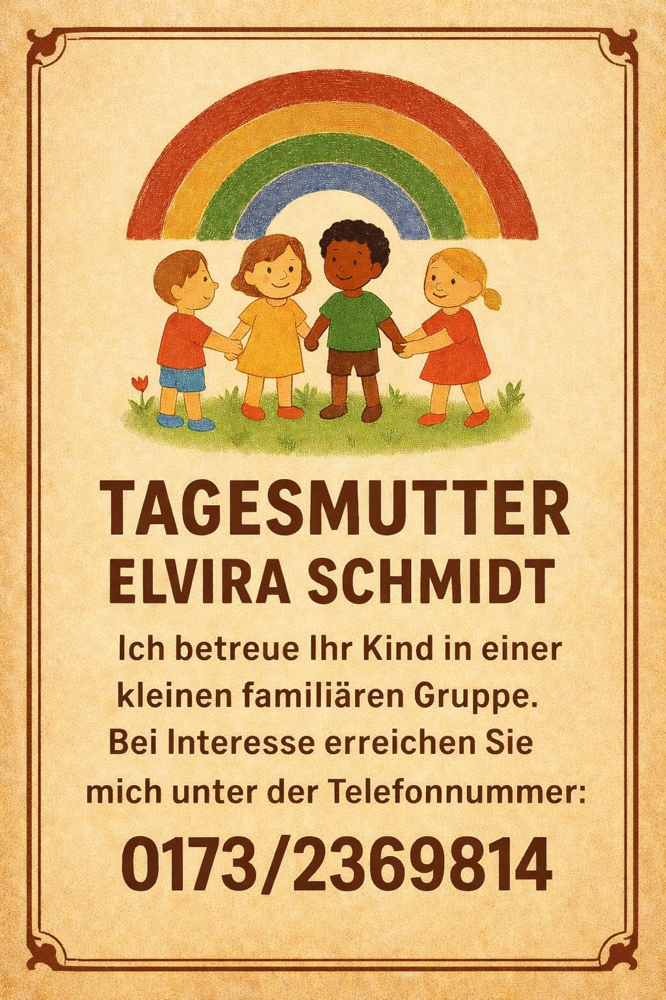

Tagesmutter Elvira Schmidt
~ Ihr Kind in guten Händen ~
Sie suchen eine Tagesmutter in Leonberg, Rutesheim, Renningen, Weissach oder Weil der Stadt. Dann setzen Sie sich mit mir in Verbindung. Seit 15 Jahren betreue ich, in Zusammenarbeit mit dem Tageskinder e.V. Leonberg, Kinder in einer kleinen Gruppe bei mir Zuhause.
info Aktuelles
Nächste freie Plätze ab:
- April 2026
- Juli 2026
- Oktober 2026
favorite Familiäre Betreuung in liebevoller Atmosphäre
Ich betreue Ihr Kind in einer kleinen, familiären Gruppe mit viel Herz und Engagement. Unsere Tage sind geprägt von Nähe, Vertrauen und kindgerechter Förderung.
restaurant Gesunde Ernährung
Frische, ausgewogene Mahlzeiten sind für mich selbstverständlich. Ich lege großen Wert auf eine gesunde Ernährung, die Kindern schmeckt und gut tut.
nature_people Zeit in der Natur
Wir verbringen viel Zeit draußen - auf unserem Gartengrundstück, bei Spaziergängen oder beim Entdecken der Natur. Bewegung und frische Luft gehören bei uns zum Alltag.

toys Natürliche Spielmaterialien
In meiner Kindertagespflege kommen ausschließlich natürliche und nachhaltige Spielsachen zum Einsatz. So fördern wir Kreativität und Achtsamkeit.
schedule Betreuungszeiten
Montag bis Donnerstag von 7:00 Uhr bis 15:00 Uhr, oder nach Vereinbarung.
euro Gebühren
Hier finden Sie die offizielle Gebührentabelle für Leonberg, Rutesheim, Rennigen, Weissach und Weil der Stadt https://www.tagesmuetter-leonberg.de/für-eltern
contact_mail Kontakt
Bei Interesse oder Fragen rufen Sie mich gerne an unter 0173/2369814 oder schreiben Sie mir eine E-Mail an elvira.schmidt.leonberg@gmail.com
Ich freue mich darauf, Sie und Ihr Kind kennenzulernen!